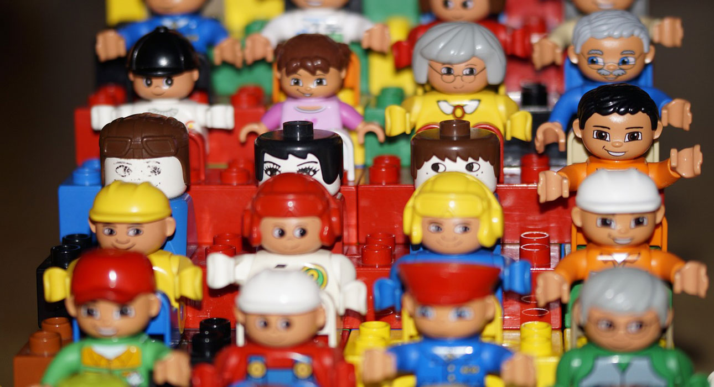
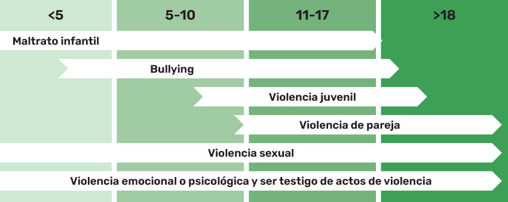

Notas & Artículos
25N y nuevas generaciones

por Virginia Meneghello

Las fechas siempre ayudan a visibilizar una situación, a mostrar una realidad cotidiana que se nos escapa en la diaria. Pero las fechas no pueden quedar solo en eso. Es 1 día donde se habla en todos lados, pero durante 364 días el tema no es tema, pero si están presente sus consecuencias.
El 25N, surge del dolor y cuando nos aproximamos a esta fecha surgen varias estadísticas que nos siguen mostrando la gravedad del tema y por suerte existe mayores intereses en tener datos, cuestión que décadas atrás ese trabajo era más difícil. Pero pareciera que documentar, mostrar, manifestar no es suficiente porque poco ha cambiado. Las cifras siguen siendo alarmantes y en muchas latitudes se mantienen o crecen.
¿Y las nuevas generaciones como responden? Se habla mucho de que son el cambio, que muchos de los sufrimientos, discriminaciones y violencias que se sufren desaparecerán porque nacieron en un momento diferente y tienen otra mirada. Si bien es cierto esto último, no nos olvidemos que nadie nace con comportamientos violentos, nadie nace con prejuicios, sin embargo, desde temprana edad los vamos incorporando de manera silenciosa y se hacen presente a lo largo de la vida. Si participan de manera activa en causas que consideran importantes y tratan de generar incidencia.
Les propongo hacer un zoom a algunos números que nos ayuden a contextualizar. Según datos de la OPS (Organización Panamericana de la Salud) nos muestra que, 1 de cada 10 niñas y adolescentes sufren violencia sexual en la Argentina y a nivel mundial, casi 1 de cada 4 adolescentes entre los 15 y 19 han sufrido violencia emocional, física o sexual perpetrada por la pareja. Y el numero pudiera ser mayor dado que no siempre se es consciente de que esos comportamientos o actitudes violentas. Un estudio de la Fundación ANAR (Ayuda a Niños y Adolescentes en Riesgo) en España expresa que casi el 50 %, para ser bien precisos el 47,1%, de las adolescentes no son conscientes de estar siendo víctimas de violencia de género, número que se incrementó el último año llegando al 63,7%.
Tipos de violencia contra las niñas y los niños
Gráfico desarrollado por OPS
Existen diferentes instancias en estos sucesos remarco solo dos: la primera es reconocerlo, poder ponerlo en palabras que eso que se está viviendo no es bueno, no está bien y otra instancia es poder denunciar en post de frenar esos comportamientos abusivos, sin embargo, el porcentaje de denuncias de víctimas de violencia de género adolescente es baja, dado que solo el 29,7% denuncia lo que arroja como resultado que el 70,3% no denuncia ni tiene intención de hacerlo.
¿Qué podemos hacer?
- No menospreciar el tema, los temas de las niñeces y adolescencias no son menos importantes, debemos darle la envergadura que requiere.
- Generar el contexto y confianza para que puedan hablar desde el espacio que estemos y desde el rol que tengamos en ese vínculo.
- Hablar de comportamientos sanos y de aquellos que no son buenos para manifestar que tal vez “esa vivencia que está atravesando” no hay que normalizarla.
- Si conocemos a quien genera esa acción también escuchar y hablar sobre las consecuencias de su accionar.
- Buscar ayuda, no siempre tenemos las herramientas, pero si existen muchas/os profesionales especialistas.
- En definitiva: poder hacer algo!
La lista es incompleta, seguro muchas mas cosas podemos sumar.